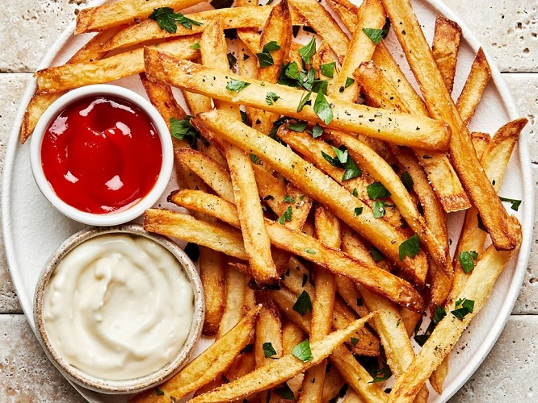

|
|
▢ અડધી મોટી ચમચી ગરમ મસાલો
▢ તળવા માટે શુદ્ધ ઘી, સિંધવ લૂણ (નમક)
▢ 1 મોટી ચમચી કોર્ન ફ્લોર
▢હવે એક મેસેજ મોકલી પર મેળવો ન્યૂઝ
▢ શરુ કરવા માટે અહીં ક્લિક કરો
|
|
બટેટાની સ્લાઈસઃ
Step1:
પહેલા તો બટેટાને છોલીને તેની લાંબી લાંબી સ્લાઈસ તૈયાર કરો. બટેટાની આ સ્લાઈસને અડધો કલાક સુધી બરફ વાળા ઠંડા પાણીમાં રહેવા દો. ત્યાર પછી આ બટેટાને નીચોવીને પાણીમાંથી કાઢી લો અને એક કોટનના કપડા પર ફેલાવી દો. આમ કરવાથી તેનુ પાણી વ્યવસ્થિત રીતે સૂકાઈ જશે.
તળવાની રીતઃ
Step2:
સૂકાઈ ગયેલા બટેટા પર કોર્ન ફ્લોર છાંટી દો. એક કડાઈમાં ઘી નાંખીને મોટા ગેસ પર ગરમ થવા મૂકી દો. ઘી ગરમ થઈ જાય તો તેમાં એક મુઠ્ઠી બટેટાના ટુકડા નાંખીને ડીપ ફ્રાય કરો.
ક્રિસ્પી બનાવવા માટેઃ
Step3:
આ રીતે એક પછી એક બધી જ ફ્રાઈસ તળી લો. જો તમે ફ્રાઈસને વધારે પડતી ક્રિસ્પી બનાવવા માંગતા હોવ તો તેને બીજી વાર ઘીમાં નાંખી ડીપ ફ્રાય કરો.
મસાલોઃ
Step4:
એક મોટી પ્લેટમાં ફ્રેન્ચ ફ્રાઈસ રાખો અને તેના પર મરી પાવડર, આમચૂર અને ગરમ મસાલા છાંટી તથા સિંધવ લૂણ છાંટી તેને વ્યવસ્થિત રીતે મિક્સ કરી લો. આ ક્રિસ્પી ફ્રેન્ચ ફ્રાઈસને લીલી ચટણી અથવા તો ચા સાથે ખાવ, જલસો પડી જશે.